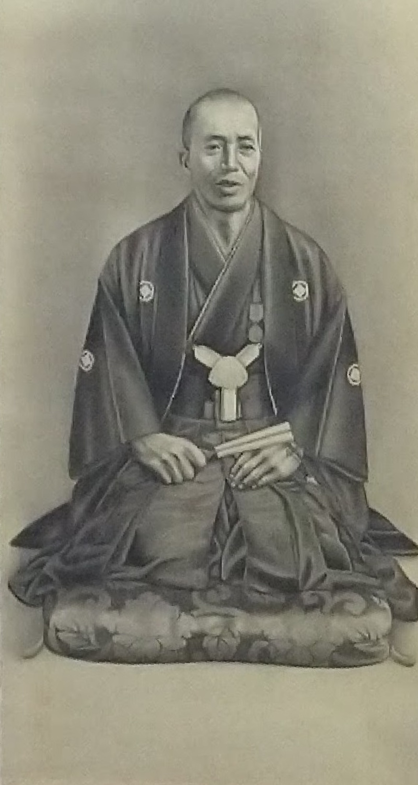
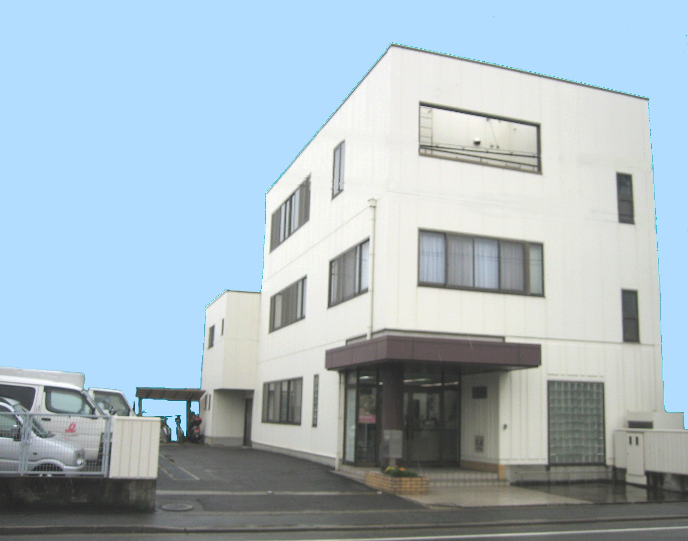
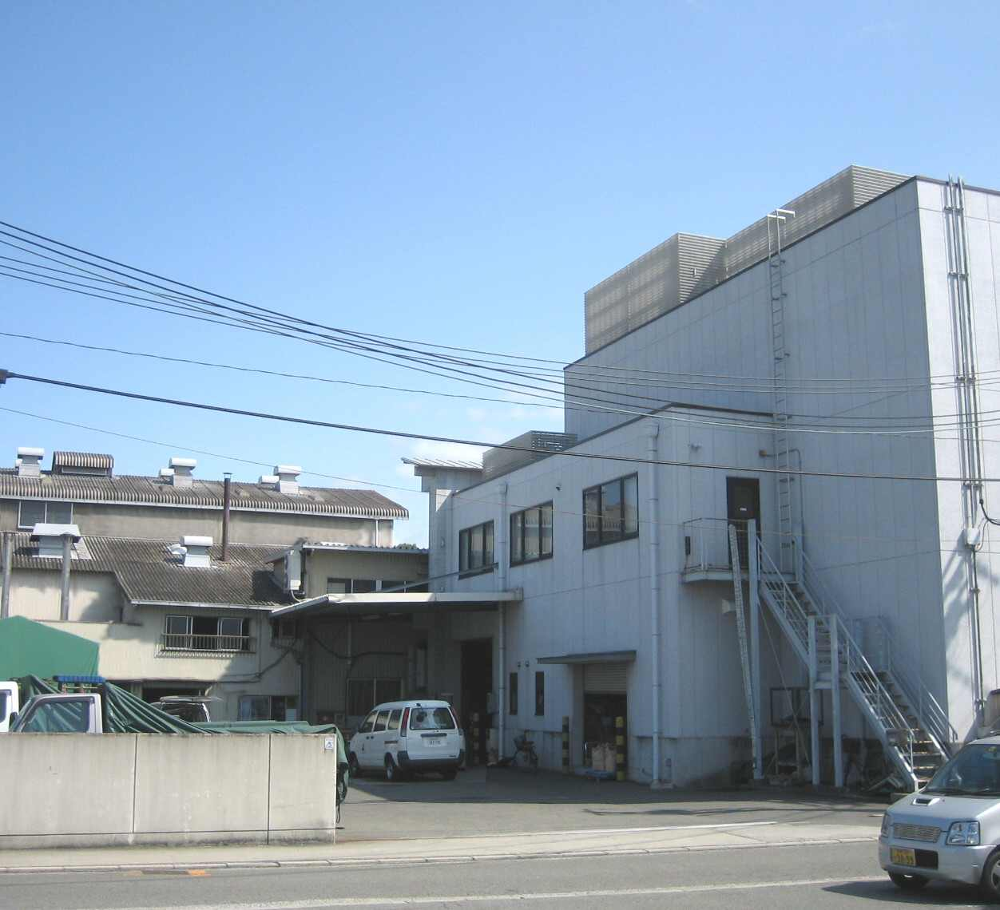

会社案内
- 創業者
- 五百城 虎次郎

ご挨拶
大正11年の創業以来90余年、穀粉の五百城は「お客様に喜んでいただける穀粉づくり」
をモットーに、この道ひとすじに研究努力を続けてまいりました。
私どもは
食文化を創造し 諸恩人に報恩の誠を捧げ 有用の人を育つ
こうした企業理念のもと、常に自己の品性を磨き、よりよい製品の生産に販売に創意をこらしつつ、皆様方に愛され信頼される穀粉づくりをめざしております。
これも、真に顧客のニーズに合った優秀な製品を造り、信頼されるお取引を続ければ、必ず皆様方とともに末永く豊かに繁栄できる、という弊社創業時の精神をひとえに信じてきたからにほかなりません。
これからも相互信頼の絆を大切にして、共存共栄をはかって行く所存でございますので、今後とも、暖かいお引立てを賜りますよう心よりお願い申し上げます。
会社沿革
- 大正11年5月
- 五百城寅次郎が、姫路市亀山に五百城製粉所を創設
寒梅粉、餅粉、米粉等の製造を始める
- 昭和22年6月
- イオキ榮養工業株式会社として法人組織に改組
社長に五百城国弘就任
- 昭和30年
- 大蔵省神戸税関から保税工場の許可を受け、海外へ穀粉の輸出を行う
- 昭和34年8月
- 五百城仲嗣が、社長に就任
- 昭和45年3月
- 大阪で万国博が開かれ、記念セールを実施し関西菓子業界で大好評を受ける
- 昭和56年11月
- 全国穀類工業組合30周年記念式典にて、食糧庁長官から五百城仲嗣社長が表彰される
- 昭和57年9月
- 本社工場を改築、新鋭設備を導入
- 昭和59年3月
- 第20回全国菓子大博覧会において紫印寒梅粉（菓子原料部門）が、
名誉総裁賞を受賞紫餅粉、紫上用粉が大臣賞を受賞

- 平成元年5月
- 第21回全国菓子大博覧会において紫餅粉、紫上用粉が総裁賞を受賞
- 平成元年6月
- 現所在地に本社を新築、工場を増設
- 平成2年12月
- お米のアイスを発売
- 平成5年8月
- 現社名の五百城ニユートリイ㈱に改称
- 平成5年11月
- 五百城仲嗣社長が藍綬褒賞の栄誉を受ける
- 平成12年
- 第22回食品産業優良企業表彰を受賞
農林水産省食品流通局長賞を受賞
- 平成16年9月
- パン用・製菓用の米粉を新製品として発売開始
- 平成16年12月
- 五百城一博が、社長に就任
- 平成20年5月
- 第25回全国菓子大博覧会においてパン用「米粉」が農林水産省
総合食料局長賞を受賞、
製菓用「米粉」が、審査総長賞を受賞
第25回全国菓子大博覧会・兵庫「姫路菓子博2008」が姫路にて開催
姫路菓子博の目玉展示となった工芸菓子「姫路城 白鷺（しらさぎ）の夢」があった
幅5.3m、奥行き4.3m、高さ2.7mで、実物の約50分の1サイズ
米粉、砂糖、マジパンなど菓子原料を使い菓子博では大きな話題となった。
弊社の米粉も使用されており、現在も形をとどめている。
- 平成25年5月
- 第26回全国菓子大博覧会において麩まんじゅう粉が中小企業長官賞を受賞
- 平成29年1月
- 本社1階にアンテナショップ・工場直売店として「米粉ドットコム」OPEN
- 令和元年10月
- 本社から「営業部」・「アンテナショップ」を工場敷地内に移転
- 令和2年9月
- 楽天市場に「米粉のイオキ」出店
会社概要
- 会社名
- 五百城ニユートリイ株式会社
（いおきニユートリイかぶしきがいしゃ）
- 代表取締役社長
- 五百城 一博 （いおき かずひろ）
- 所在地
- 〒670-0973 兵庫県姫路市亀山2丁目183番地
- 電話
- 079-235-1727（代表）
- FAX
- 079-235-0301
- 資本金
- 31,000,000円
- 従業員
- 約20名
- 取引銀行
- 三井住友銀行姫路支店、姫路信用金庫本店
- 本社
- 兵庫県姫路市亀山2丁目183

- 亀山工場
- 兵庫県姫路市亀山206番地
